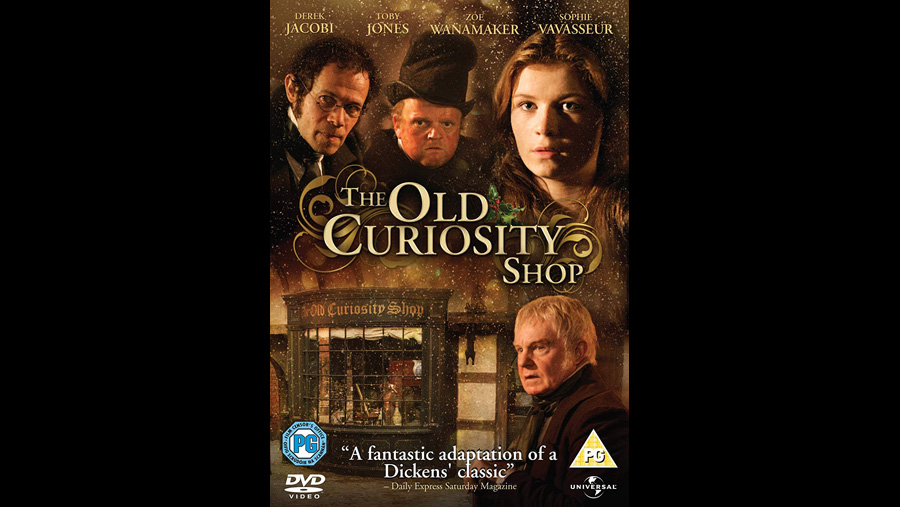

2007

CAST
Little Nell
-
Sophie Vavasseur
Grandfather Trent
-
Derek Jacobi
Quilp
-
Toby Jones
Mrs. Quilp
-
Anna Madeley
Sampson Brass
-
Adam Godley
Sally Brass
-
Gina McKee
Dick Swiveller
-
Geoff Breton
The Single Gentleman (Jacob)
-
Adrian Rawlins
Kit Nubbles
-
George MacKay
Mrs. Nubbles
-
Kelly Campbell
Mrs. Jarley
-
Zoë Wanamaker
Tom Codlin
-
Martin Freeman
Short Trotters
-
Steve Pemberton
Rev. Pratchett
-
Jonathan Coy
Freddie Trent
-
Bryan Dick
The Marchioness
-
Charlene McKenna
Mrs. Jiniwin
-
Josie Lawrence
Mr. Liggers
-
Bradley Walsh
Innkeeper
-
Michael Webber
Mrs. George
-
Elizabeth Bennett
Constable
-
Gerry O'Brien
CREATIVE TEAM
Director
-
Brian Percival
Screenplay
-
Martyn Hesford
PRODUCTION
Broadcast on ITV on 26 December 2007, the adaptation is in general very faithful to the novel. The most major changes are the deletion of Garlands and their household and the identity of the Single Gentleman (here called Jacob) who is changed from Grandfather's brother to his estranged son and Nell's father.